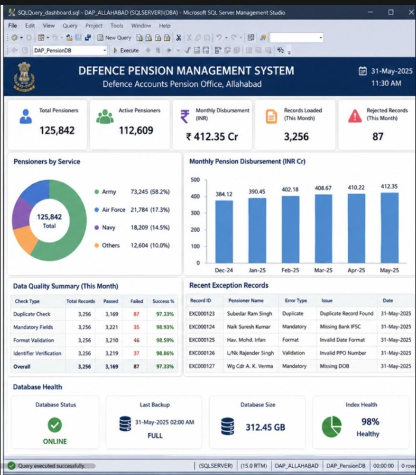
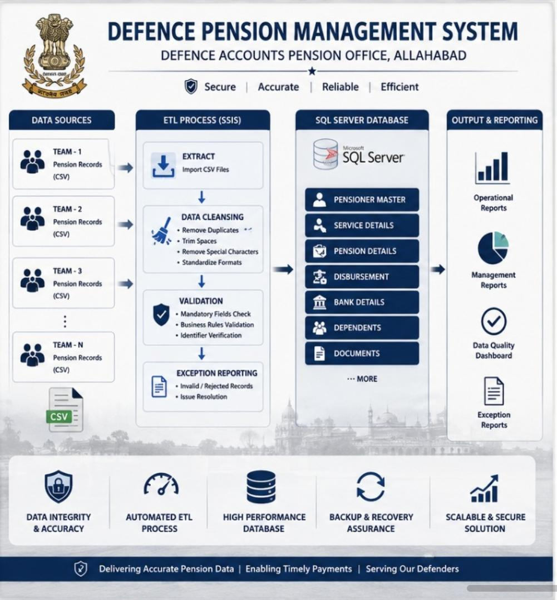

First Project 2008 to 2009: Defence Accounts Pension, Allahabad – Defence Pension Management System
Designed and implemented a centralized SQL Server database for the Defence Accounts Pension Office, Allahabad, to manage pension records for retired defence personnel. The project involved collecting pension data from multiple teams, performing data cleansing and validation, developing ETL processes, and maintaining a secure, high-quality database to support accurate pension processing and reporting.
Key Responsibilities
- Designed and implemented the SQL Server database schema for storing defence pension records.
- Created normalized database tables, indexes, constraints, stored procedures, views, and user-defined functions.
- Coordinated with multiple teams to collect and consolidate pension data from different sources.
- Imported pension data received in CSV format into SQL Server using ETL processes.
- Developed SQL scripts and ETL workflows for automated data loading and validation.
- Performed data cleansing activities before loading records into the production
database, including:
- Removal of duplicate records
- Trimming extra spaces from text fields
- Removing unwanted special characters
- Standardizing data formats
- Validating mandatory fields
- Verifying pension identifiers and record consistency
- Implemented business validation rules to ensure data accuracy and integrity.
- Created exception reports for rejected or invalid records to support issue resolution.
- Optimized SQL queries and indexes for improved database performance.
- Managed database backup, recovery, and routine maintenance activities.
- Supported users by resolving data-related issues and ensuring timely availability of pension records.
- Prepared operational and management reports for stakeholders.
Key Achievements
- Successfully designed and implemented a centralized pension database for retired defence personnel.
- Automated CSV-based data import and validation processes, reducing manual effort and improving accuracy.
- Improved overall data quality by implementing duplicate detection, data cleansing, and validation rules.
- Enhanced database performance through query optimization and index tuning.
- Established reliable backup and recovery procedures to ensure data availability and business continuity.
- Delivered a secure, scalable, and high-performance database solution supporting efficient pension record management.
Technologies Used

